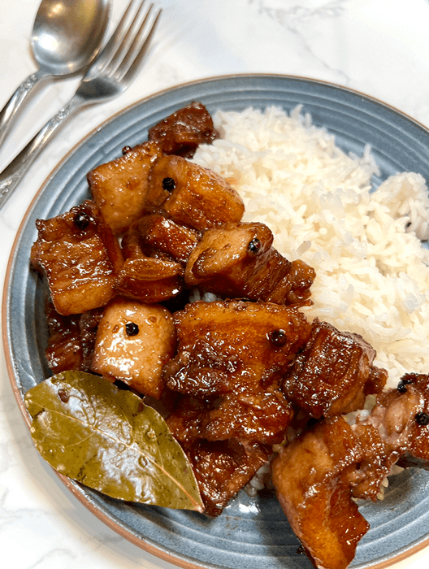
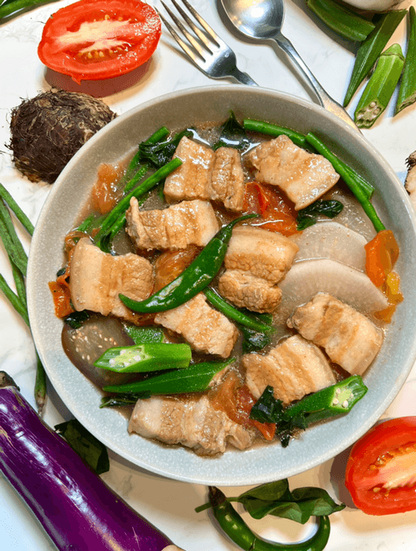
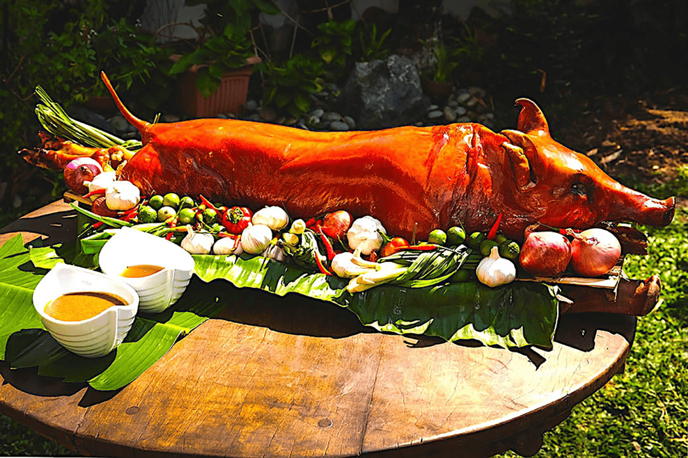
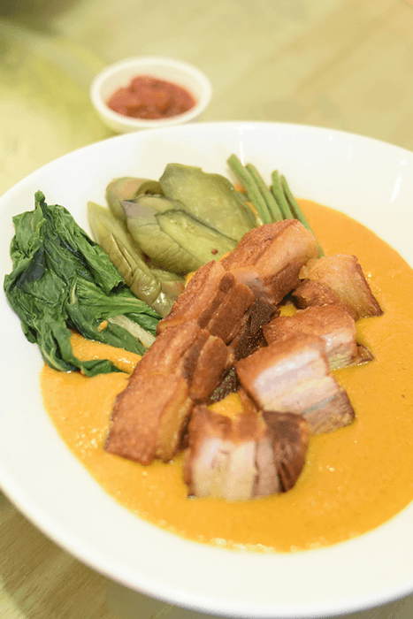
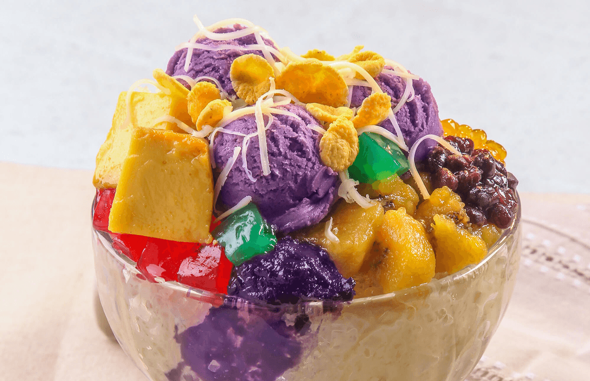
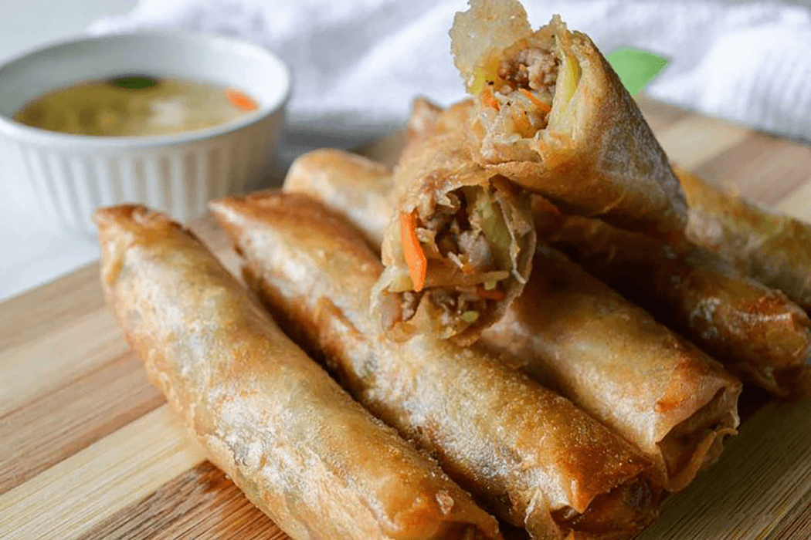
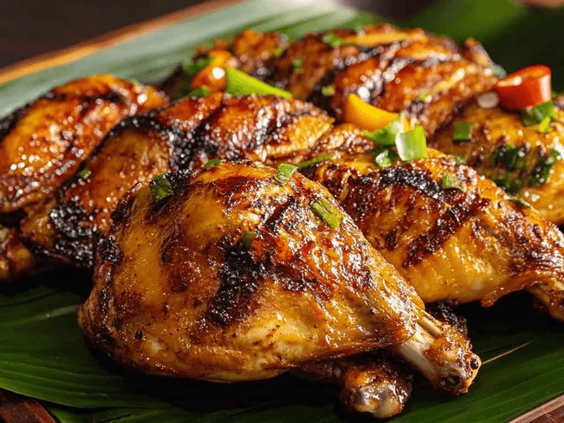
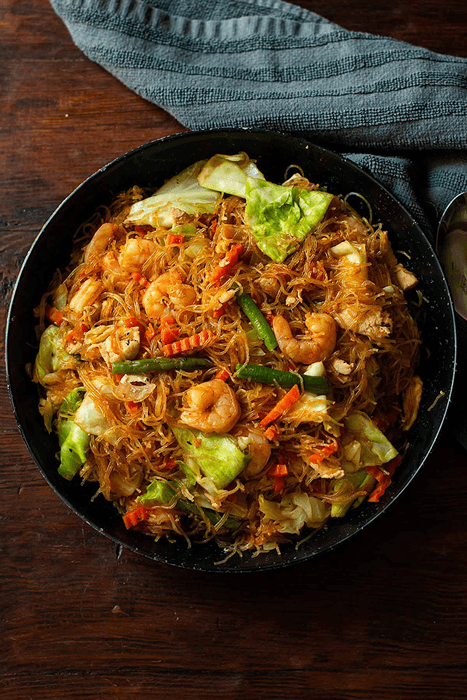
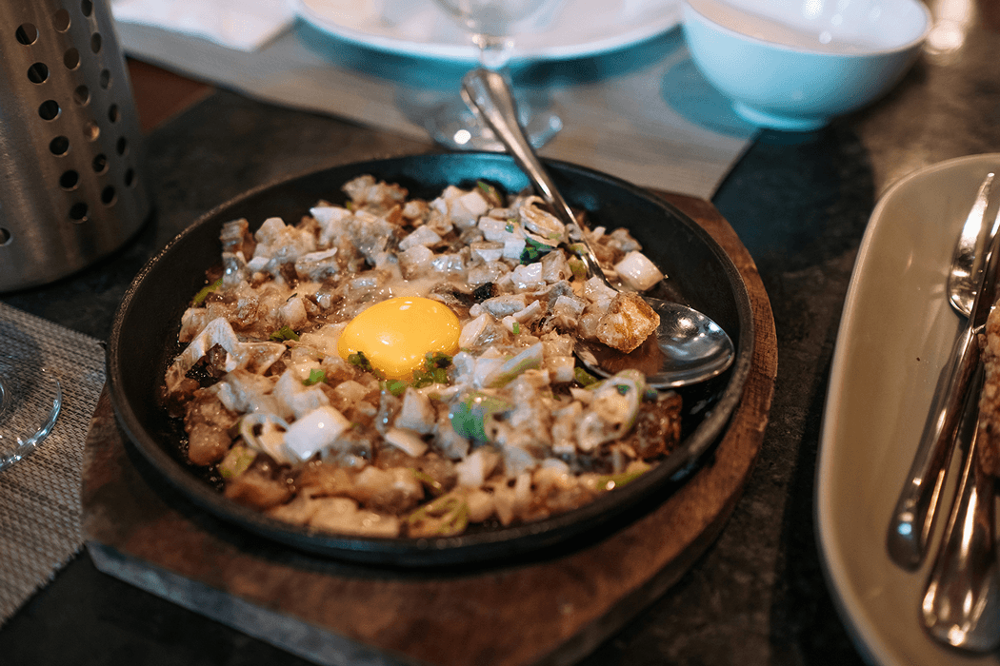
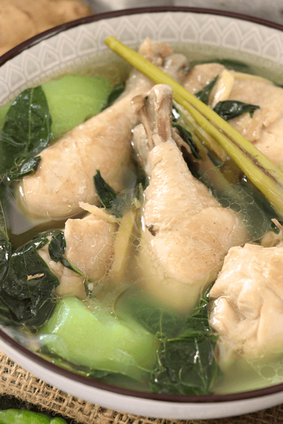

Adobo — The King of Filipino Dishes
Adobo is arguably the Philippines’ most iconic dish. Made with chicken or pork braised in a mixture of soy sauce, vinegar, garlic, pepper, and bay leaves, it’s savory, aromatic, and slightly tangy. Every family has its own version, sometimes adding coconut milk, potatoes, or pineapple for extra flavor. Traditionally served with steamed white rice, adobo is comfort food at its finest, perfect for both daily meals and special occasions. Its adaptability and long shelf life made it a staple in Filipino households, especially in tropical climates.

Sinigang — A Sour Tamarind Soup That Defines “Comfort Food”
Sinigang is a hearty, tangy soup made with tamarind, tomatoes, and a mix of vegetables such as kangkong (water spinach), radish, and eggplant, often with pork, shrimp, fish, or beef. Its signature sourness is refreshing without being overpowering. Served hot, it’s considered a perfect comfort food, warming the soul while stimulating the taste buds. Many locals enjoy sinigang for lunch or dinner, often paired with steamed rice and sometimes fish sauce on the side for extra flavor.

Lechon — The Famous Whole Roasted Pig
Lechon is a show-stopping dish, particularly popular during fiestas, weddings, and Christmas celebrations. A whole pig is marinated with a blend of herbs and spices, then roasted over charcoal until the skin turns crispy and golden brown. The meat inside remains juicy and flavorful, often dipped in liver sauce or vinegar. Globally recognized as a must-try Filipino specialty, lechon represents celebration, community, and culinary pride.

Kare-Kare — Rich Peanut Stew
Kare-kare is a creamy stew made from oxtail, tripes, and sometimes pork hock, slowly simmered in a savory peanut sauce. Traditionally, it includes vegetables like eggplant, string beans, and banana blossom, and it’s served with bagoong (fermented shrimp paste) on the side. Its nutty, slightly sweet flavor contrasts perfectly with the salty bagoong. Often enjoyed during special gatherings, kare-kare is a festive dish that showcases Filipino ingenuity in combining flavors and textures

Halo-Halo — The Most Colorful Dessert in Asia
Halo-halo, meaning “mix-mix,” is a layered dessert of crushed ice, evaporated milk, sweet beans, jellies, leche flan, ube (purple yam), and a scoop of ice cream on top. It’s vibrant, refreshing, and perfect for the Philippines’ tropical climate. Each bite offers a combination of textures and flavors—creamy, sweet, and cold—making it a favorite among locals and tourists alike. Halo-halo is not just a dessert; it’s a symbol of Filipino creativity and love for variety.

Lumpia — Filipino Spring Rolls
Lumpia comes in many forms. Fresh lumpia (lumpiang sariwa) is filled with sautéed vegetables and sometimes meat, wrapped in a soft crepe-like wrapper, and served with a sweet peanut sauce. Fried lumpia shanghai is crispy, filled with seasoned ground pork or beef, and a staple at parties and celebrations. Lumpia embodies Filipino culinary versatility and is enjoyed as appetizers, snacks, or side dishes.

Chicken Inasal — The Grilled Chicken of Bacolod
Originating from Bacolod City, Chicken Inasal is marinated in calamansi (Filipino lime), lemongrass, ginger, garlic, and annatto oil before being grilled to perfection. It’s smoky, juicy, and slightly tangy, usually served with garlic rice and a side dipping sauce. This dish reflects the Visayan region’s love for grilled flavors and tropical spices, offering a simple yet unforgettable taste experience.

Pancit — The Noodles of Many Traditions
Pancit encompasses a variety of noodle dishes in Filipino cuisine, each with unique ingredients and flavors. Pancit Canton features stir-fried egg noodles with meat and vegetables; Pancit Bihon uses thin rice noodles with soy sauce, meat, and veggies; Pancit Palabok is topped with garlic sauce, shrimp, and chicharrón; and Pancit Malabon is known for thick noodles with seafood toppings. Noodles are central to celebrations, symbolizing long life and prosperity.

Sisig — Crispy, Sizzling, Addictive Goodness
Sisig is made from finely chopped pig’s face, ears, and liver, seasoned with onions, chili, and calamansi, then served sizzling on a hot plate. Modern versions may include eggs or mayonnaise. Crispy, tangy, and savory, sisig is a popular pulutan (beer snack) and a beloved dish in Pampanga. Its bold flavors make it both a street food and a restaurant specialty.

Tinola — Ginger Chicken Soup
Tinola is a light, comforting soup with chicken, ginger, green papaya, and chili leaves. Mildly seasoned, it highlights the freshness of ingredients and is often enjoyed with rice. Tinola embodies traditional Filipino home cooking, providing warmth and nourishment, especially during rainy or cool weather.
